The task of model selection targets the question: If there are several competing models, how do I choose the most appropriate one? This vignette1 outlines the model selection tools implemented in {RprobitB}.
For illustration, we revisit the probit model of travelers deciding between two fictional train route alternatives from the vignette on model fitting:
data("model_train", package = "RprobitB")
model_train
#> Probit model 'choice ~ price + time + change + comfort | 0'.As a competing model, we consider explaining the choices only by the alternative’s price, i.e. the probit model with the formula choice ~ price | 0:2
model_train_sparse <- nested_model(model_train, form = choice ~ price | 0)The nested_model() function helps to estimate a new version of model_train with new specifications. Here, only form has been changed.
The model_selection() function
{RprobitB} provides the convenience function model_selection(), which takes an arbitrary number of RprobitB_model objects and returns a matrix of model selection criteria:
model_selection(model_train, model_train_sparse,
criteria = c("npar", "LL", "AIC", "BIC", "WAIC", "MMLL", "BF", "pred_acc"))
#> model_train model_train_sparse
#> npar 4 1
#> LL -1727.74 -1865.86
#> AIC 3463.48 3733.72
#> BIC 3487.41 3739.70
#> WAIC 3463.76 3733.91
#> se(WAIC) 0.18 0.07
#> pWAIC 4.32 1.15
#> MMLL -1732.14 -1867.48
#> BF:model_train 1 < 0.01
#> BF:model_train_sparse > 100 1
#> pred_acc 69.55% 63.37%Specifying criteria is optional. Per default, criteria = c("npar", "LL", "AIC", "BIC").3 The available model comparison criteria are explained in the following.
npar
Having "npar" in criteria returns the number of model parameters. The number is computed by the npar() method:
npar(model_train, model_train_sparse)
#> [1] 4 1Here, model_train has 4 parameters (a coefficient for price, time, change, and comfort, respectively), while model_train_sparse has only a single price coefficient.
LL
If "LL" is included in criteria, model_selection() returns the model’s log-likelihood values. They can also be directly accessed via the logLik() method:4
AIC
Including "AIC" yields the Akaike’s Information Criterion (Akaike 1974), which is computed as \[-2 \cdot \text{LL} + k \cdot \text{npar},\] where \(\text{LL}\) is the model’s log-likelihood value at the estimated parameters, \(k\) is the penalty per parameter with \(k = 2\) per default for the classical AIC, and \(\text{npar}\) is the number of parameters in the fitted model.
Alternatively, the AIC() method also returns the AIC values:
AIC(model_train, model_train_sparse, k = 2)
#> [1] 3463.485 3733.723The AIC quantifies the trade-off between over- and under-fitting, where smaller values are preferred. Here, the increase in goodness of fit justifies the additional 3 parameters of model_train.
BIC
Similar to the AIC, "BIC" yields the Bayesian Information Criterion (Schwarz 1978), which is defined as \[-2 \cdot \text{LL} + \log{(\text{nobs})} \cdot \text{npar},\] where \(\text{LL}\) is the model’s log-likelihood value at the estimated parameters, \(\text{npar}\) is the number of parameters in the fitted model, and \(\text{nobs}\) is the number of data points (which can be accessed via the nobs() method).
There exists also a method for the BIC value:
BIC(model_train, model_train_sparse)
#> [1] 3487.414 3739.705The interpretation is analogue to AIC: the more complex model_train is preferred because of the smaller BIC value.
WAIC (with se(WAIC) and pWAIC)
WAIC is short for Widely Applicable (or Watanabe-Akaike) Information Criterion (Watanabe and Opper 2010). As for AIC and BIC, the smaller the WAIC value the better the model. Including "WAIC" in criteria yields the WAIC value, its standard error se(WAIC), and the effective number of parameters pWAIC, see below.
The WAIC is defined as \[\text{WAIC} = -2 \text{lppd} + 2\cdot p_\text{WAIC},\] where \(\text{lppd}\) stands for log pointwise predictive density and \(p_\text{WAIC}\) is a penalty term proportional to the variance in the posterior distribution that is sometimes called effective number of parameters, see McElreath (2020) p. 220 for a reference.
The \(\text{lppd}\) is approximated as follows. Let \[p_{si} = \Pr(y_i\mid \theta_s)\] be the probability of observation \(y_i\) (here the single choices) given the \(s\)-th set \(\theta_s\) of parameter samples from the posterior. Then
\[\text{lppd} = \sum_i \log \left( S^{-1} \sum_s p_{si} \right).\] The penalty term is computed as the sum over the variances in log-probability for each observation: \[p_\text{WAIC} = \sum_i \mathbb{V}_{\theta} \log (p_{si}) . \] The \(\text{WAIC}\) has a standard error of \[\sqrt{n \cdot \mathbb{V}_i \left[-2 \left(\text{lppd} - \mathbb{V}_{\theta} \log (p_{si}) \right)\right]}.\]
Before computing the WAIC of an object, the probabilities \(p_{si}\) must be computed via the compute_p_si() function:5
model_train <- compute_p_si(model_train)Afterwards, the WAIC can be accessed as follows, where the number in brackets is the standard error:
WAIC(model_train)
#> 3463.76 (0.18)You can visualize the convergence of the WAIC as follows:

MMLL
"MMLL" in criteria stands for marginal model log-likelihood. The model’s marginal likelihood \(p(y\mid M)\) for a model \(M\) and data \(y\) is required for the computation of Bayes factors, see below. In general, the term has no closed form and must be approximated numerically.
{RprobitB} uses the posterior Gibbs samples to approximate the model’s marginal likelihood via the posterior harmonic mean estimator: Let \(S\) denote the numbers of posterior samples \(\theta_1,\dots,\theta_S\). Then, \[p(y\mid M) = \left(\mathbb{E}_\text{posterior} p(y\mid \theta,M)^{-1} \right)^{-1} \approx \left( \frac{1}{S} \sum_s 1/p(y\mid \theta_s,M) \right) ^{-1} = \tilde{p}(y\mid M).\] By the law of large numbers, \(\tilde{p}(y\mid M) \to p(y\mid M)\) almost surely as \(S \to \infty\).
model_train <- mml(model_train)
model_train$mml
#> 3.54e-117 * exp(-1464)To check the convergence, call plot(x$mml), where x is the output of this function:
plot(model_train$mml)
If the estimation does not seem to have converged, you can improve the approximation by combining the value with the prior arithmetic mean estimator: For this approach, \(S\) samples \(\theta_1,\dots,\theta_S\) are drawn from the model’s prior distribution. Then,
\[p(y\mid M) = \mathbb{E}_\text{prior} p(y\mid \theta,M) \approx \frac{1}{S} \sum_s p(y\mid \theta_s,M) = \tilde{p}(y\mid M).\]
Again, it hols by the law of large numbers, that \(\tilde{p}(y\mid M) \to p(y\mid M)\) almost surely as \(S \to \infty\).
The final approximation of the model’s marginal likelihood than is a weighted sum of the posterior harmonic mean estimate and the prior arithmetic mean estimate, where the weights are determined by the sample sizes.
BF
The Bayes factor is an index of relative posterior model plausibility of one model over another (Marin and Robert 2014). Given data \(\texttt{y}\) and two models \(\texttt{mod0}\) and \(\texttt{mod1}\), it is defined as
\[ BF(\texttt{mod0},\texttt{mod1}) = \frac{\Pr(\texttt{mod0} \mid \texttt{y})}{\Pr(\texttt{mod1} \mid \texttt{y})} = \frac{\Pr(\texttt{y} \mid \texttt{mod0} ) \cdot \Pr(\texttt{mod1})}{\Pr(\texttt{y} \mid \texttt{mod1})\cdot \Pr(\texttt{mod0})}. \] The ratio \(\Pr(\texttt{mod1}) / \Pr(\texttt{mod0})\) expresses the factor by which \(\texttt{mod1}\) a prior is assumed to be the correct model. The front part \(\Pr(\texttt{y} \mid \texttt{mod0} ) / \Pr(\texttt{y} \mid \texttt{mod1})\) is the ratio of marginal model likelihoods.
There is
pred_acc
And finally, adding "pred_acc" to criteria for the model_selection() function returns the share of correctly predicted choices. From the output above we deduce that model_train correctly predicts about 6% of the choices more than model_train_sparse.6
References
Akaike, H. 1974. “A New Look at the Statistical Model Identification” 19.
Marin, J., and C. Robert. 2014. Bayesian essentials with R. Springer Textbooks in Statistics. Springer Verlag, New York.
McElreath, R. 2020. Statistical Rethinking: A Bayesian Course with Examples in R and Stan. 2. ed. Chapman; Hall/CRC.
Schwarz, Gideon. 1978. “Estimating the Dimension of a Model.” The Annals of Statistics 6.
Watanabe, Sumio, and Manfred Opper. 2010. “Asymptotic Equivalence of Bayes Cross Validation and Widely Applicable Information Criterion in Singular Learning Theory.” Journal of Machine Learning Research 11 (12).